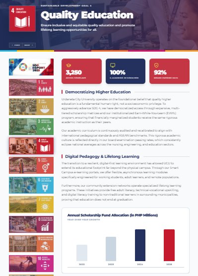

In 2025, Urdaneta City University (UCU), through the Office of External Affairs and Linkages, demonstrated a strong commitment to sustainability by implementing programs and partnerships aligned with the United Nations Sustainable Development Goals (SDGs). The university integrated sustainability into its academic, extension, research, and internationalization efforts, reinforcing its role as a socially responsible higher education institution.
UCU actively contributed to SDG 4 (Quality Education) by promoting accessible, inclusive, and globally connected learning experiences through academic collaborations, student development initiatives, international engagements, and experiential learning opportunities. Programs such as trainings, collaborative online international learning (COIL), work immersion, and capacity-building activities enhanced student competencies and lifelong learning opportunities.
The university also advanced SDG 17 (Partnerships for the Goals) through strengthened linkages with local and international institutions, government agencies, industries, and community stakeholders. These partnerships supported collaborative projects, knowledge exchange, mobility activities, and community-based programs that contributed to institutional growth and sustainable development.
In support of SDG 8 (Decent Work and Economic Growth) and SDG 10 (Reduced Inequalities), UCU facilitated skill development, workplace readiness, and inclusive opportunities for students and partner communities. Through internships, work immersion, employability programs, and extension services, the university fostered professional growth and equitable access to educational and developmental opportunities.
Moreover, UCU integrated sustainability awareness into institutional practices by encouraging environmental responsibility, social engagement, cultural understanding, and innovation-driven solutions to societal challenges. These initiatives positioned the university as an active contributor to local and global sustainability agendas while strengthening its commitment to quality education, community engagement, and transformative partnerships.
Overall, the 2025 SDG sustainability efforts of UCU reflect a holistic and strategic approach toward building resilient communities, empowering learners, and promoting sustainable institutional development through education, collaboration, and inclusive engagement.